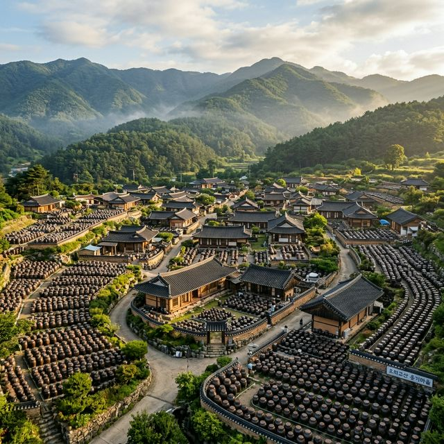

흙과 불, 그리고 기다림의 미학이 빚어낸 한국의 보물 '옹기'를 테마로 한 국내 유일의 축제, 2026 울산 옹기 축제가 여러분을 초대합니다. 2026년 5월 1일부터
3일까지 울산 울주군 외고산 옹기마을에서 열리는 이번 축제는 '웰컴투 옹기마을'이라는 슬로건 아래 더욱 풍성하고 현대적인 감각으로 무장했습니다. 전국 옹기의 50% 이상을 생산하는 국내 최대 규모의
옹기 집산지인 이곳에서, 장인들의 숨결이 깃든 작품을 감상하고 물레 위에서 직접 흙을 만지며 나만의 옹기를 빚어보는 특별한 시간을 가져보세요. 밤하늘을 수놓는 화려한 드론 라이트 쇼와 고즈넉한 가마터의
불멍 체험까지, 과거와 미래가 공존하는 울산 옹기 축제의 모든 것을 상세히 안내해 드립니다.
1. 전국 최대 옹기 집산지, 외고산 옹기마을의 역사와 가치
울산광역시 울주군에 위치한 외고산 옹기마을은 1950년대부터 옹기를 굽기 시작해 현재에 이르기까지 그 명맥을 이어오고 있는 명실상부한 옹기의 성지입니다. 이곳은 과거 옹기 수요가
급증하던 시절, 전국에서 모여든 장인들이 마을을 형성하며 한국 옹기 문화의 중심지로 급성장했습니다. 단순히 옹기를 파는 곳이 아니라, 무형문화재로 지정된 장인들이 여전히 전통 방식 그대로 가마를 운영하며
예술작품으로서의 옹기를 빚어내고 있는 살아있는 박물관과 같습니다.
옹기는 숨을 쉬는 그릇으로 잘 알려져 있으며, 우리 선조들의 지혜가 담긴 과학적인 저장 용기입니다. 외고산의 흙과 산야초를 섞어 만든 천연 유약은 옹기 특유의 통기성과 방부성을 극대화하여 발효 식품의 맛을
깊게 만들어줍니다. 축제 기간에는 이러한 장인들의 작업 과정을 근거리에서 지켜볼 수 있으며, 옹기에 담긴 수천 년의 지혜와 역사적 가치를 몸소 느낄 수 있습니다. 굴뚝에서 피어오르는 연기와 가마터의 열기는
방문객들에게 묘한 향수와 함께 전통 문화에 대한 경건함을 선사합니다.

수천 개의 옹기들이 장관을 이루는 외고산 옹기마을의 평화로운 일출 풍경 - AI 제작 이미지
2. 2026 울산 옹기 축제 일정 및 슬로건 '웰컴투 옹기마을'
올해 제26회를 맞이하는 울산 옹기 축제는 2026년 5월 1일(금)부터 5월 3일(일)까지 3일간 집중적으로 운영됩니다. 근로자의 날 연휴와 맞물려 가족 단위 나들이객이 몰릴
것으로 예상되는 만큼, 축제 사무국에서는 예년보다 넓은 주차 공간과 촘촘한 프로그램을 준비했습니다. 축제 슬로건인 '웰컴투 옹기마을'은 옹기라는 소재의 무게감을 덜고, 누구나 친숙하고 즐겁게 방문할 수 있는
열린 마을 축제를 지향한다는 의미를 담고 있습니다.
첫날인 5월 1일에는 장엄한 개막 퍼레이드 '옹기로 길놀이'와 함께 화려한 드론 쇼가 펼쳐져 축제의 시작을 알립니다. 2일에는 장인들의 시연 공연인 '흙 묻은 어깨'가 메인 무대를 장식하며, 마지막 날인 3일
저녁에는 국내 정상급 가수들이 출연하는 '옹기 콘서트'가 대미를 장식할 예정입니다. 특히 올해는 야간 관람객을 위해 마을 전체에 LED 조명과 미디어 아트를 설치한 '야화' 전시가 강화되어, 밤에도 옹기의
곡선미를 즐길 수 있는 특별한 무대가 마련됩니다.
3. 나도 장인이다! 직접 흙을 빚는 옹기 물레 체험 안내
옹기 축제의 가장 큰 매력은 직접 흙을 만지는 촉감 체험에 있습니다. 마을 곳곳에 마련된 옹기 특별 체험관에서는 남녀노소 누구나 물레 위에 앉아 옹기 장인의 지도 아래 자신만의
작품을 만들 수 있습니다. 끈적한 흙을 한 줌 떼어내어 길게 늘리고, 물레의 회전에 맞춰 모양을 잡아가는 과정은 아이들에게는 놀라운 창작의 즐거움을, 어른들에게는 잡념을 잊게 하는 명상의 시간을
제공합니다.
체험을 통해 만든 옹기는 현장에서 직접 가져갈 수도 있고, 추가 비용을 지불하면 장인의 가마에서 구워 집으로 배송받을 수도 있습니다. 실제 가마에서 구워진 옹기는 견고함과 색감이 시중의 그릇과는 비교할 수
없을 정도로 고색창연합니다. 이외에도 '옹기 가마 불멍' 체험은 뜨겁게 달궈진 가마 앞에서 잠시 휴식을 취하며 전통의 온기를 느끼는 프로그램으로, 최근 트렌드에 맞춰 큰 인기를 끌고 있습니다. 흙과 교감하는
이 소중한 시간은 여러분의 영혼에 따뜻한 위로를 건넬 것입니다.
4. 야간 조명 전시 '야화'와 드론 라이트 쇼: 밤의 옹기마을
2026 울산 옹기 축제가 가장 공을 들인 부분 중 하나는 야간 콘텐츠입니다. 해가 지면 마을의 항아리 길을 따라 수천 개의 LED 조명이 켜지며 환상적인 '신비의 보물마을'로
변신합니다. 공공 미술 프로젝트인 '야화'는 레이저와 스모그 효과를 활용하여 마치 옹기 가마 속에 들어온 듯한 몽환적인 분위기를 연출합니다. 옹기의 둥근 곡선을 따라 흐르는 빛의 흐름은 사진 작가들에게도
최고의 피사체가 되어줍니다.
개막 당일과 주말 밤에 예정된 드론 라이트 쇼는 울산의 디지털 산업과 전통 문화가 결합된 상징적인 공연입니다. 하늘 위로 떠오른 드론들이 옹기 장인의 손길과 항아리의 형성을 입체적으로 그려내며 관객들의 탄성을
자아낼 것입니다. 전통은 지루하다는 편견을 깨고 최신 트랜드를 결합한 이러한 시도는 옹기 축제를 더욱 젊고 역동적으로 만듭니다. 낮에는 활기찬 체험을 즐겼다면, 밤에는 빛의 바다로 변한 옹기마을을 조용히
거닐며 축제의 여운을 만끽해 보세요.
축제 일자
2026. 05. 01(금) ~ 05. 03(일)
개최 장소
울산 외고산 옹기마을 일대
입장료
무료 (일부 체험 유료)
핵심 키워드
물레 체험, 가마 불멍, 야간 야화 전시
5. 옹기에 담긴 미식: 옹기애(愛) 삼겹살과 전통 발효 식품
옹기가 빛을 발하는 순간은 역시 음식이 담겼을 때입니다. 축제장 내 '옹기 먹거리 장터'에서는 옹기 가마의 복사열을 이용해 구워낸 옹기 삼겹살을 맛볼 수 있습니다. 옹기 안에서
원적외선으로 서서히 익힌 삼겹살은 겉은 바삭하고 속은 촉촉하여 그 맛이 일품입니다. 또한, 옹기에서 발효된 깊은 맛의 고추장과 된장을 활용한 비빔밥, 전통 장터 국밥 등은 방문객들의 입을 즐겁게
합니다.
옹기마을의 장인들이 직접 담근 간장과 된장을 저렴한 가격에 판매하는 직판장도 운영되니 주부님들이라면 꼭 들러보셔야 합니다. 3년 이상 숙성된 장의 깊은 맛은 대량 생산된 제품과는 비교할 수 없는 감칠맛을
자랑합니다. 또한, 발효 에이드나 옹기 차 시음장에서는 옹기에 담겨 더욱 시원하고 풍미가 살아난 음료들을 경험할 수 있습니다. 옹기는 단순히 그릇이 아니라 맛을 완성하는 최후의 식재료라는 점을 입안 가득
느껴보시기 바랍니다.
6. '옹귀의 모험' 스탬프 투어와 아이들을 위한 옹이랜드
가족 단위 방문객을 위해 축제 기간 동안 캐릭터 옹귀(옹기 귀신)와 함께하는 스탬프 투어가 진행됩니다. 마을 곳곳의 주요 명소와 장인의 공방을 탐방하며 도장을 찍으면 소정의
기념품을 받을 수 있어 아이들의 참여도가 매우 높습니다. 이 과정을 통해 아이들은 자칫 딱딱하게 느껴질 수 있는 옹기 제작 공정과 가마의 원리를 자연스럽고 재미있게 배우게 됩니다.
어린이 전용 공간인 '옹이랜드'에서는 에어바운스와 옹기 조각을 이용한 캐릭터 만들기 체험 등 아이들 눈높이에 맞춘 다채로운 이벤트가 열립니다. 또한 옹기 장인들이 아이들을 위해 특별히 제작한 작은 옹기
장난감과 기념품은 아이들에게 인기 만점입니다. 교육적인 측면과 놀이적인 측면을 완벽히 조화시킨 울산 옹기 축제는 5월 가정의 달을 맞이하여 부모님과 자녀가 함께 소통하며 추억을 쌓기에 최적의 행사장입니다.
마을 전체가 거대한 놀이터가 되는 마법을 체험해 보세요.
A mystical night view of the Onggi Village, illuminated by thousands of LED lights along the jar
paths, with laser and smoke effects creating a dreamlike atmosphere, high quality, cinematic lighting.
LED 조명과 안개 효과로 신비롭게 연출된 '야화' 전시 중인 옹기마을의 밤 풍경 - AI 제작 이미지
7. 교통 및 주차 안내: 외고산 옹기마을 찾아가는 법
축제장인 외고산 옹기마을은 울산 시내에서 차로 약 20~30분 거리에 있으며, 부산과도 가까워 접근성이 매우 좋습니다. 자차 이용 시 내비게이션에 '외고산 옹기마을' 또는 아파트
단지 인근의 임시 주차장을 설정하시면 됩니다. 축제 기간에는 마을 내부로의 차량 진입이 금지되므로 인근 초등학교나 공터에 마련된 대규모 주차장에 차를 대고 안내 요원의 지시에 따라 도보나 셔틀버스를 이용하셔야
합니다.
대중교통을 이용하시는 분들은 동해선 남창역에서 하차하여 시내버스로 5~10분이면 도착 가능합니다. 울산역(KTX)이나 터미널에서 축제장까지 한 번에 연결되는 임시 셔틀 노선도 운영될 계획이니 공식 홈페이지의
교통 정보를 미리 확인하시기 바랍니다. 특히 주말 점심시간 이후에는 남창 일대 도로가 매우 혼잡할 수 있으니 되도록 오전 10시 이전 도착을 목표로 하시는 것이 스트레스 없는 축제 관람의 지름길입니다.
8. 주변 연계 관광지: 간절곶 소망우체통에서 진하해수욕장까지
울주까지 오셨다면 옹기마을과 인접한 바다 코스도 추천해 드립니다. 차로 약 15분 거리에 있는 간절곶은 한반도에서 해가 가장 먼저 뜨는 곳으로 유명하며, 거대한 소망우체통과
아름다운 산책로가 조성되어 있습니다. 탁 트인 동해 바다의 절경은 옹기마을의 정적인 느낌과는 또 다른 상쾌함을 선사합니다. 또한 근처의 진하해수욕장은 잔잔한 파도와 수려한 명선도가 있어 산책하기에
그만입니다.
나들이 마무리로 울산의 대표 명소인 '대왕암공원'이나 '태화강 국가정원'을 들러보시는 것도 좋습니다. 특히 5월의 태화강은 양귀비꽃과 보리가 만개하여 초록빛 장관을 이루므로 청보리밭 부럽지 않은 풍경을 감상할
수 있습니다. 옹기마을의 전통 체험과 울주의 해안 풍경, 그리고 울산 시내의 정원 산책까지 엮는다면 완벽한 동해안 1박 2일 여행 코스가 완성됩니다. 지친 일상에 쉼표를 찍는 울산 여행, 지금 바로 계획해
보세요.
9. 2026 울산 옹기 축제 관람객을 위한 필수 준비물
축제장은 야외 공간이 많으므로 편안한 신발과 햇빛을 가릴 수 있는 모자나 양산은 필수입니다. 5월 초의 울산은 한낮 기온이 꽤 올라가 건조함과 더위를 느낄 수 있으니 휴대용 미니
선풍기와 생수를 챙기시는 것이 좋습니다. 또한 물레 체험이나 흙 체험 시 옷에 흙이 묻을 수 있으므로 너무 아끼는 옷보다는 활동하기 편한 복장을 추천하며, 아이들의 경우 여벌의 옷을 챙겨오시면 마음껏 창작
활동을 즐길 수 있습니다.
마지막으로, 옹기를 구매할 계획이 있으시다면 차량 트렁크를 미리 정리해 두세요. 현장에서 직접 산 옹기는 택배보다 직접 가져가는 것이 파손 위험이 적고 가격 면에서도 유리한 경우가 많습니다. 환경 보호를 위해
장바구니나 에코백 하나 챙겨주시는 센스도 잊지 마시기 바랍니다. 전통 가마의 원기를 품고 자애로운 흙의 숨결을 느끼러 떠나는 길, 2026 울산 옹기 축제에서 잊지 못할 5월의 기억을 만들어보시기 바랍니다.